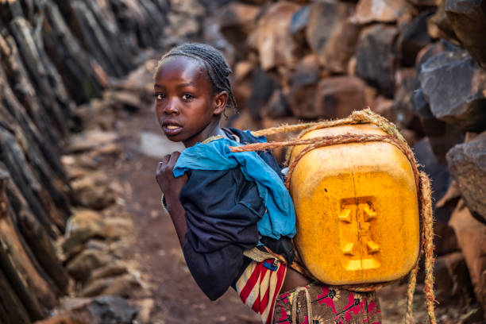
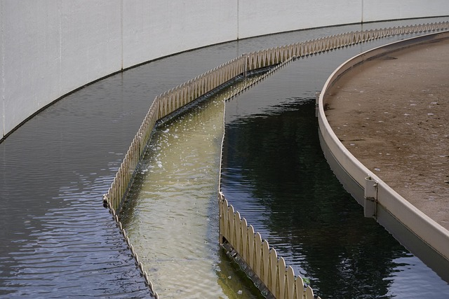
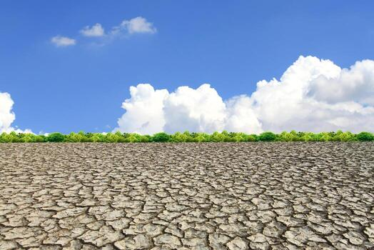

Water Seven localiza fuentes de agua potable, guía su purificación y conecta comunidades.
Sin acceso
Sin saneamiento
Muertes al año
Datos reales de la OMS y UNICEF que muestran por qué nace Water Seven
de personas carecen de acceso a agua potable gestionada de forma segura. 115 millones beben agua directamente de fuentes superficiales.
OMS/UNICEF 2023de personas aún carecen de servicios de saneamiento gestionados de forma segura. 419 millones practican la defecación al aire libre.
OMS/UNICEF 2023de personas mueren cada año por enfermedades relacionadas con el agua. 1.000 niños menores de 5 años mueren cada día.
OMS 2023de las aguas residuales regresa al ecosistema sin ser tratada ni reutilizada, contaminando fuentes de agua naturales.
ONU-Agua 2018de la población mundial vive en países con estrés hídrico alto o crítico, sin suficiente agua para cubrir sus necesidades básicas.
FAO/ONU-Aguapersonas en el mundo viven con escasez de agua al menos un mes al año. La crisis afecta desproporcionadamente a zonas rurales.
UNESCO 2023
Millones de personas caminan horas cada día para conseguir agua

El 80% de las aguas residuales se vierte sin tratamiento

La sequía afecta a comunidades enteras en todo el mundo
Water Seven nace para enfrentar esta crisis. Usamos tecnología accesible para localizar fuentes de agua potable, brindar guías de purificación y conectar comunidades a través de un chat de comunicación. Creemos que el agua es un derecho humano, no un privilegio.
fuentes de agua cercanas
con guías de purificación
comunidades enteras